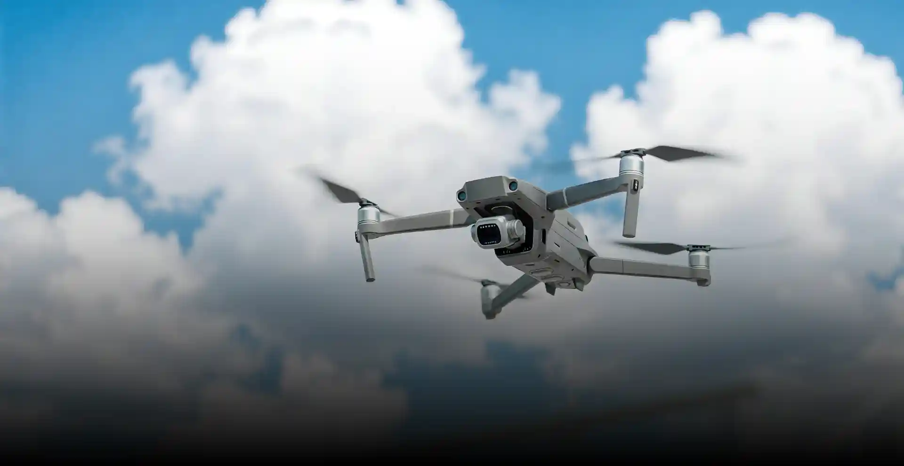
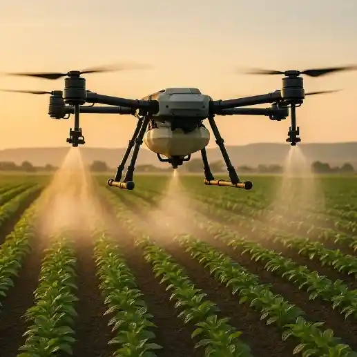
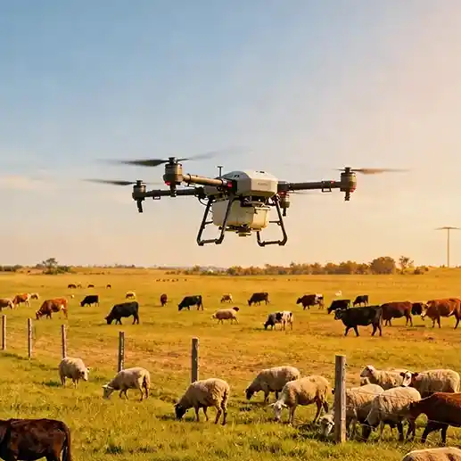
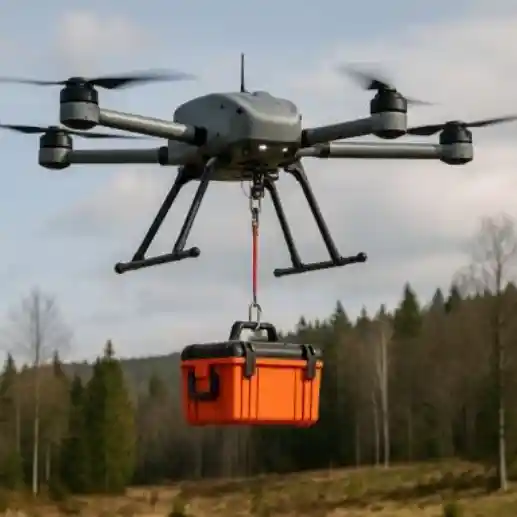
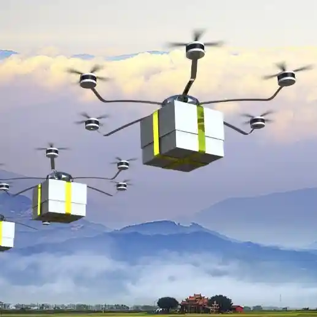
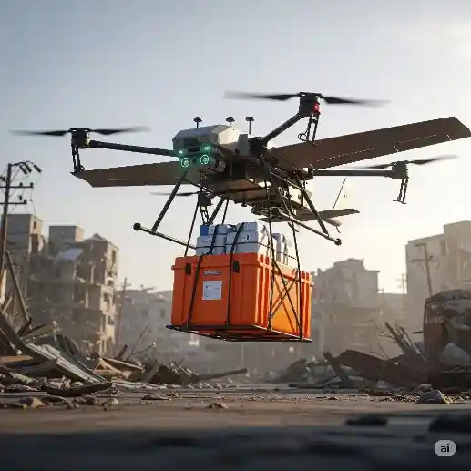

专项应用场景培训
安全 · 低成本 · 高还原 · 标准化
主要考察对法律法规、飞行原理、航空气象等基础知识的掌握程度。系统提供“练习”与“考试”两种模式，涵盖理论知识题库，严格按照 CAAC 标准设计，提交后立即生成成绩报告。
高精度的 3D 无人机虚拟组装，学员首先选择机型，预览飞机或认知零件。随后进入组装环节，实时显示进度，完成后系统自动结算成绩，支持查看历史记录。
指定空域保持悬停，完成 360° 定轴自旋。严格考核飞行员的空间方向感和微操能力，满足“高度偏差≤0.5m，水平位移≤1m，自旋角速度均匀”等标准化要求。
点击“悬停校准”，将无人机稳定在指定初抬位置。
保持油门稳定，缓慢推拉方向舵，以均匀角速度完成自旋。
自旋完成后，精准停回初始点，系统自动生成评分及复盘。
考核飞行员综合操控能力的关键科目，要求飞手在规定空域内操控无人机沿标准8字形航线飞行，考验双手协调能力与空间方向感。
1分钟内精准悬停中心圈上方，重点训练微操能力。
对称、圆滑的8字形航线，保持匀速与固定高度。
完成飞行后准确返回并悬停起始点，考核降落精准度。
预定航线起飞、巡航、转弯、定点降落。全面考核学员在超视距（BVLOS）状态下对无人机姿态、航迹及突发故障的综合处理能力。
构建符合CAAC要求的空域，支持城市、山区等场景模拟真实电磁干扰环境。
显示姿态、航迹、电池等数据，逼真模拟链路中断、信号延迟等突发故障。
基于CAAC官方评分规则，标注违规操作及扣分原因，提供针对性改进建议。
提供开放、无约束的练习环境。随意操控无人机，无任务限制。适合新手熟悉基础操作或高手测试飞行参数。支持自由调整设置，探索飞行技巧。
硬核的竞速挑战玩法，设有固定赛道及检查点。按规定顺序穿越并抵达终点。赛道内设置障碍物，系统自动记录用时，极度考验航线规划与高速操控能力。
为加速学员从培训到岗位的无缝对接，针对低空经济细分领域的应用类培训模块。
通过模拟培训，帮助操作人员熟练掌握光伏板专用清洗无人机的作业技能，实现光伏电站高效、安全、低成本的运维管理。
重点针对大面积耕地、林地、牧场及山地丘陵等场景，帮助学员熟练掌握航线规划、自主作业技能。


模拟城市密集区、山区水域等复杂地形环境，助力操作人员熟练掌握低空飞行、多角度拍摄、狭小空间作业等技能。
针对传统交通不便区域的物流需求，重点模拟大山、岛屿、沙漠、偏远乡村等复杂场景，帮助学员熟练掌握复杂地形起降。


面向城市运行与安全管控需求，重点模拟道路、桥梁、管网等设施巡检场景，帮助操作人员熟练掌握隐患排查、数据记录。
聚焦应急救援与自然灾害处置场景，重点模拟地震、洪水、火灾等灾害现场，帮助操作人员熟练掌握快速起飞、低空突防。

通过高仿真模拟训练，帮助学员快速掌握竞速无人机操控技巧与特技动作要领，降低真机训练的设备损耗与安全风险。
为您的行业定制专业的模拟培训解决方案
联系我们